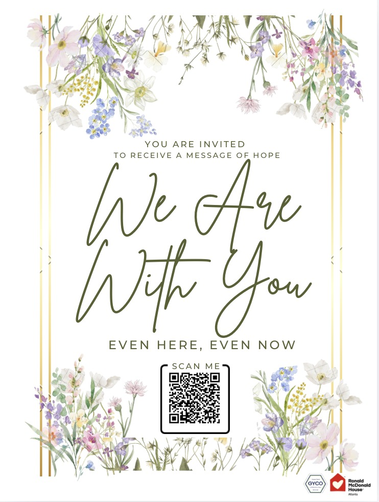

One philosophy.
One Loop.
One Community.

Everything begins with one simple choice.
NADO means, "I choose to learn. I choose to participate."
When one NADO meets another NADO, they become WE.
Every community begins this way.
Different expressions of the same philosophy
NADO School, GYCO, and WE ARE WITH YOU are not three separate organizations. They are one continuous loop.
Instead of ending, everything loops back to NADO School. This is one continuous loop.
Learn
NADO School
Education begins with curiosity. A lifelong philosophy that encourages people to keep learning, growing, and becoming.
Offer
GYCO
Students transform learning into action. They create, research, perform, teach, serve, and develop new ideas for real communities.
Loop
WE ARE WITH YOU
Learning becomes encouragement. Communities receive hope, participate together, and create new stories that inspire the next generation.
Three roles. One shared philosophy.
NADO School
Where lifelong learning begins.
GYCO
Where students grow through real experiences.
WE ARE WITH YOU
Where learning becomes encouragement for others.
Every ending becomes another beginning.
One philosophy. One Loop. One Community.
Welcome to WE ARE WITH YOU.
How can we encourage you today? This page was made for you — whether you are in a hospital room, a family house, a classroom, or a quiet moment at home. Start with one message, one song, or one small activity, created by students who believe no one should feel alone in a difficult place.
Start wherever you need
You don't need to know who we are to begin. Everything here was created for the person visiting right now.
One Message for You
One simple message of encouragement, written for you. Every partnership — and every visit — begins here.
Receive a messageHope Capsule
A small collection of messages, music, and reflections for moments when someone needs hope.
Open Hope CapsuleMusic for Today
Performances, quiet music, and cheerful songs shared by student musicians.
Listen nowActivities for Families
Simple music, rhythm, and learning activities that families can enjoy together, wherever they are.
Try an activityStories of Hope
Stories of strength, memory, and connection from every partner community.
Find your communityEvery partnership begins with
One Message for You.
Whether we work with a hospital, a Ronald McDonald House, a school, or a senior community, every partnership begins the same way: someone shares one message of encouragement. That simple message becomes the beginning of connection.
From there, we listen to each partner community and build around it — a landing page, QR system, and program experience that fits that specific place.
Song requests & stories
A cancer center may need song requests and patient stories that carry meaning through treatment.
Letters for families
A Ronald McDonald House may need letters for children and parents during long stays.
Lessons that travel
A school in the Philippines may need English lessons, music videos, story time, and simple learning activities.
Each partner is different — but every relationship begins with the same simple step.
One Platform.
One Message.
Many Communities.
Every partner begins with One Message for You. From there, each community builds its own unique experience — and each partner page may include:
- One Message for You
- Song requests
- Letters and messages
- Music videos
- Teaching videos
- Patient, family, or student stories
- Quiet music
- Interactive activities
- Hope Capsule
- QR codes
- Multilingual content
Every partner receives a page that feels personal — while still belonging to the same WE ARE WITH YOU platform.
The Circle of Love
Encouragement does not stop with the person who receives it. It continues.
The Circle of Love turns outreach into relationship.
Where WE ARE WITH YOU Happens
WE ARE WITH YOU grows through partnerships with healthcare providers, family support organizations, schools, senior communities, disability organizations, and local community partners. Each partner has its own unique needs, but every page begins with the same mission: Even Here. Even Now. WE ARE WITH YOU.
No one should feel alone in a difficult place
A hospital room, a waiting area, a senior community, a school, or a family support center can feel isolating. WE ARE WITH YOU was created to bring connection into those spaces.
Through music, letters, song requests, teaching videos, stories, reflections, and shared activities, we create simple ways for people to feel seen, heard, and remembered.
Our goal is not only to send encouragement — it's to build a circle where encouragement keeps moving from one person to another.
One shared template.
Many personal stories.
Every partner page follows a familiar structure — WE ARE WITH YOU, a partner introduction, One Message for You, program cards, Hope Capsule, QR access, and a community message.
This consistency matters. Whether someone opens a cancer care page, a NICU page, or a school page, they immediately understand how to participate. The design may change, the language may change, the content may change — but the experience feels connected.
That consistency becomes the WE ARE WITH YOU brand.
Every partner page
Students Created This.
And They Keep Growing It.
Behind WE ARE WITH YOU is GYCO, a student-led innovation community where students learn by building projects that create real impact. Students do more than volunteer. They identify community needs, design solutions, build partnerships, create educational resources, produce media, conduct research, and develop programs that continue to grow long after a single event.
GYCO is built on the educational philosophy of NADO School, where students learn, create, serve, reflect, and begin again through every experience. WE ARE WITH YOU is the first platform created through that journey. It is not the destination. It is the beginning of many student-led projects still to come.
One Message Can Change a Moment.
One Community Can Change a Life.
Students create the invitation.
Partners make it meaningful.
Communities keep it moving.
That is how WE ARE WITH YOU continues to grow.